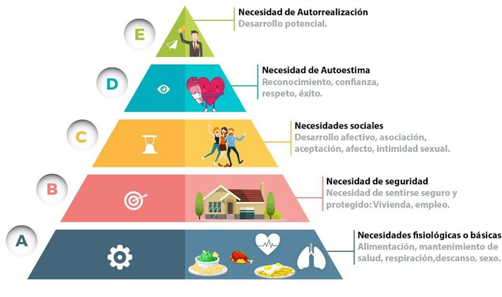
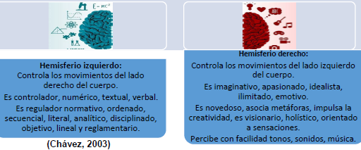
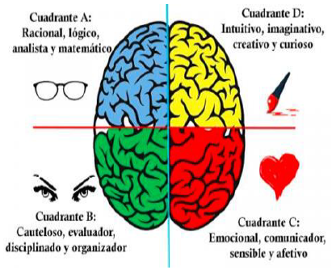
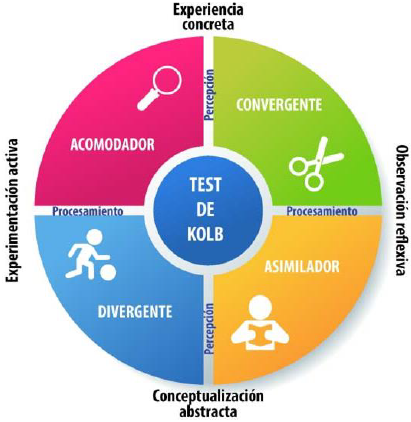
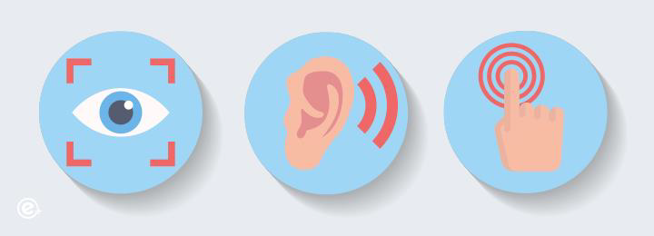

10 UNIDAD II: ESTRATEGIA Y ESTILOS DE APRENDIZAJE.
Objetivo
Distinguir la relación entre estrategia, aprendizaje estratégico y estilos de aprendizaje como factores asociados y determinantes en el proceso de enseñanza y aprendizaje.
10.1 Definición de estrategia y aprendizaje estratégico.
Ferreiro (2006) considera que el concepto de estrategia ha sido transferido al ámbito de la educación en el marco de las propuestas de “enseñar a pensar” y de “aprender a aprender”.
También, explica, que las estrategias son el sistema de actividades, acciones y operaciones que permiten la realización de una tarea con una calidad requerida.
Para aprender a aprender hay que enseñar procedimientos. Desde esta concepción los procedimientos se basan en técnicas y se enseñan para lograr el aprendizaje de contenidos específicos del área.
10.1.1 Clasificación de las estrategias
Algunos autores - Pozo (2000), Marqués (2001), Ferreiro (2006), Porilho (2009), Díaz Barriga y Hernández Rojas (2010), entre otros - analizan las estrategias de diferentes formas en las que se destacan cuatro diferentes grupos:
Cognoscitivas. Son capacidades internamente organizadas de las cuales hace uso el estudiante para guiar su propia atención, aprendizaje, recuerdo y pensamiento.
Enseñanza. Se concretan en una serie de actividades de aprendizaje dirigidas a los estudiantes y adaptadas a sus características, a los recursos disponibles y a los contenidos objeto de estudio.
Didácticas. Son el sistema de acciones y operaciones, tanto física como mentales, que facilitan la confrontación (interactividad) del sujeto que aprende con el objeto de conocimiento y la relación de ayuda y cooperación con otros colegas durante el proceso de aprendizaje (interacción) para realizar una tarea con la calidad requerida (Ferreiro, 2006).
Aprendizaje. Son un conjunto de pasos o habilidades que un estudiante adquiere y emplea de forma intencional como instrumento flexible para aprender significativamente y solucionar problemas y demandas académicas.
10.1.2 Enfoques del aprendizaje estratégico
10.1.2.1 Enfoque del aprendizaje estratégico como aprendizaje de estrategias
El aprendizaje estratégico como aprendizaje de estrategias, está en directa relación con el conocimiento estratégico de Brown (1975), quien lo describe como “el saber cómo conocer”.
10.1.2.2 Aprendizaje estratégico como aprendizajes de calidad
El aprendizaje estratégico, se define como aquellos procesos internos (cognitivos, motivacionales y emocionales) y conductas que promueven un aprendizaje efectivo y eficiente – eficaz (Valenzuela, 1998).
10.2 Estilos de aprendizaje: modelos más representativos.
“El término estilo de aprendizaje se refiere al hecho de que cada persona utiliza su propia manera o estrategias para aprender. Aunque las estrategias varían según lo que se quiera aprender, cada uno tiende a desarrollar ciertas tendencias que definen un estilo de aprendizaje […] es decir, tienen que ver con la forma en que los estudiantes estructuran los contenidos, forman y utilizan conceptos, interpretan la información, resuelven los problemas, seleccionan medios de representación, etc.” (SEP, 2004:4).
10.2.1 Modelo de Maslow
La pirámide de Maslow consta de cinco niveles: los cuatro primeros suelen ser agrupados como «necesidades de déficit (primordiales); al nivel superior lo denominó «autorrealización», «motivación de crecimiento», o «necesidad de ser».
En este sentido, es indispensable acudir al aprendizaje situado, hay que reconocer el contexto del estudiante y ajustar los procesos cognoscitivos a su realidad, de comprender en qué camino éste se siente realizado.

Necesidad de Autorrealización: Desarrollo potencial.
Necesidad de Autoestima: Reconocimiento, confianza, respeto, éxito.
Necesidades sociales: Desarrollo afectivo, asociación, aceptación, afecto, intimidad sexual.
Necesidad de seguridad: Necesidad de sentirse seguro y protegido: Vivienda, empleo.
Necesidades fisiológicas o básicas: Alimentación, mantenimiento de salud, respiración, descanso, sexo.
10.2.2 Modelo de los Hemisferios cerebrales de Hermann
En 1989 Ned Hermann propuso su Teoría del Cerebro Total y lo divide en cuadrantes. En el hemisferio izquierdo se localizan los cuadrantes A y B. Cada cuadrante desempeña ciertas funciones. Por ejemplo: el cuadrante A se encarga del pensamiento lógico, analítico, crítico, matemático. Se basa en hechos concretos. El cuadrante B es organizado, planificado, detallado y controlado. Se encarga del pensamiento secuencial.
Por otro lado, en el hemisferio derecho se encuentran los cuadrantes C y D. El cuadrante C es emocional, sensorial, humanístico, interpersonal, musical, simbólico, espiritual. Mientras que el cuadrante D se especializa en el pensamiento conceptual, es holístico, integrador, global, sintético, creativo, artístico, espacial, visual, metafórico.
Hemisferio izquierdo:
Controla los movimientos del lado derecho del cuerpo.
Es controlador, numérico, textual, verbal.
Es regulador normativo, ordenado, secuencial, literal, analítico, disciplinado, objetivo, lineal y reglametario.
Hemisferio derecho:
Controla los movimientos del lado
izquierdo del cuerpo.
Es imaginativo, apasionado, idealista, ilimitado, emotivo.
Es novedoso, asocia metáforas, impulsa la creatividad, es vivionario, holístico, orientado a sensaciones.
Percibe con facilidad tonos, sonidos, música.

Cuadrante A: Racional, lógico, analista y matemático
Cuadrante B: Cauteloso, evaluador, disciplinado y organizador
Cuadrante C: Emocional, comunicador, sensible y afetivo
Cuadrante D: Intuitivo, imaginativo, creativo y curioso

10.2.3 Modelo de KOLB
Salvador 2012, señala que, según Kolb, los alumnos desarrollan estilos de aprendizaje que privilegian algunas capacidades por encima de otras. De la combinación de los procesos percepción y procesamiento identifica cuatro estilos:
Convergente. Perciben a través de la conceptualización abstracta y procesan mediante la experiencia activa.
Divergente. Perciben a través de la experiencia concreta y procesan mediante la observación reflexiva.
Asimilador. Perciben a través de la conceptualización abstracta y procesan mediante la observación reflexiva.
Acomodador. Perciben a través de la experiencia concreta y procesan mediante la experimentación activa.

10.2.4 Modelo de Felder y Silverman
Felder (1993), para realizar una primera clasificación de los estilos de aprendizaje, formula cinco preguntas que originan dimensiones de las diversas formas de recibir y procesar información.
De esta forma, las dimensiones asociadas a cada pregunta y respuesta son: sensitivo- intuitiva, visual-auditiva, inductivo-deductiva, activo-reflexiva y secuencial-global.
Estas dimensiones generan estilos de aprendizaje optativos en cada una de ellas, sin que sean exclusivos. Dichos estilos en una persona son continuos y no excluyentes, es decir, un estudiante puede ubicarse en alguna de las escalas: fuerte, moderado o débil, en cada una de las dimensiones.
A continuación, se muestran tanto la pregunta como la respuesta obtenida:
1) ¿Qué tipo de información preferentemente perciben los estudiantes? Encontraron que puede ser sensorial (señales, sonidos, sensaciones físicas) o intuitiva (recuerdos, ideas, insignias).
2) ¿A través de qué sentidos los estudiantes preferentemente perciben la información? Puede ser visual (imágenes, diagramas, diagramas de flujo, demostraciones) o verbal (explicaciones habladas o escritas).
3) ¿De qué manera los estudiantes prefieren procesar la información? De forma activa (involucrándose en actividades físicas o en círculos de discusión) o reflexiva (mediante la introspección).
4) ¿De qué manera los estudiantes entienden y procesan los contenidos que se les presentan? Secuencialmente (paso a paso de forma incremental) o globalmente (partiendo de un esquema general).
5) ¿De qué manera prefieren organizar la información los estudiantes? Puede ser inductiva –a partir de datos, hechos u observaciones se infieren reglas generales (de lo particular a lo general)– o deductiva, se presentan los principios y se deducen las consecuencias o las aplicaciones (de lo general a lo particular).
10.2.5 Modelo VAK
El modelo VAK tiene la intención de comprender cuáles son las vías preferentes de entrada, procesamiento y salida de información, así como las significaciones en el sujeto tanto a través del lenguaje como de la cultura.
Estilo de aprendizaje visual. Corresponde a una manera de aprender preferentemente mediante imágenes, atendiendo especialmente a las características que se pueden ver e imaginar.
Estilo de aprendizaje auditivo. Es una forma de aprender principalmente mediante sonidos, tanto musicales como verbales.
Estilo de aprendizaje kinestésico. Se aprende con una gran intensidad de sensaciones, emociones, procesamiento del tacto, el gusto y el olfato. En especial en este estilo se atiende al aprendizaje, teniendo como recurso el moverse, escuchar música o estar comiendo, por ejemplo.

10.3 Detección de los estilos de aprendizaje.
Existen varias propuestas para determinar los estilos de aprendizaje respecto de los distintos modelos actuales. A continuación, se enlistan los más conocidos y se analizará en esta Guía el Cuestionario de Revell y Norman, por ser el más sencillo y breve.
10.3.1 Inventario de Estilos de aprendizaje II (Modelo Felder y Silverman)
El Inventario de Estilos de Aprendizaje II de Felder y Silverman identifica las preferencias de los estudiantes en cuatro dimensiones: percepción (sensorial vs. intuitivo), recepción (visual vs. verbal), organización (secuencial vs. global) y procesamiento (activo vs. reflexivo). Este modelo ayuda a los educadores a adaptar sus métodos de enseñanza a las diversas necesidades de los estudiantes y permite a los alumnos desarrollar estrategias de aprendizaje más efectivas.
10.3.2 TEST ESTILO DE APRENDIZAJE (MODELO PNL)
El Test de Estilos de Aprendizaje basado en el modelo de Programación Neurolingüística (PNL) identifica cómo las personas prefieren recibir y procesar información a través de tres canales principales: visual, auditivo y kinestésico. Los estudiantes prefieren ver y leer información, utilizando gráficos y diagramas; los auditivos aprenden mejor a través de la escucha y el habla, beneficiándose de discusiones y explicaciones verbales; y los kinestésicos necesitan interactuar físicamente con el material, aprendiendo a través de la práctica y la manipulación.
10.3.3 Cuestionario de Revell y Norman
El siguiente cuestionario te ayudará a conocer tu manera de aprender. Instrucciones: ¿Qué oraciones son verdaderas para ti?
Interpretación según las respuestas obtenidas
Las respuestas (a) se relacionan con el estilo de aprendizaje visual, las (b) con el auditivo y las (c) con el kinestésico. Un puntaje de más de 30 puntos en cualquiera de los sentidos muestra que probablemente tenga una fuerte preferencia por ese sistema representativo y por ende sea su estilo de aprendizaje. Un puntaje de 0-15 en cualquiera de los estilos muestra que éste no está muy desarrollado. Un puntaje similar en los tres sentidos muestra flexibilidad y te da más opciones cuando estás aprendiendo, enseñando o comunicando.
Cuestionario traducido por Vellegal, Ana María (2004)
10.3.3.0.0.1 Otros cuestionarios:
· Detección de los hemisferios dominantes (Modelo Hermann)
· Ubicación del hemisferio cerebral dominante de Sánchez G
· Inventario de Estilos de aprendizaje de Felder
· Inventario de Estilos de aprendizaje II (Modelo Felder y Silverman)
· Cuestionario CHAEA (Modelo Kolb)
· Cuestionario para identificar Estilos de aprendizaje de Caderros
· Cuestionario para identificar Estilos de aprendizaje de Lozier (Modelo de la Programación Neurolingüística PNL)
10.4 Distinción entre inteligencias múltiples y estilos de aprendizaje.
Es importante determinar que en ocasiones se puede confundir los términos inteligencias múltiples y estilos de aprendizaje desde la percepción que en ambos existe una implicación de características psicobiológicas para la asimilación de información en una persona.
Por ejemplo, si hablamos de inteligencia kinestésica que explica la afinidad por el movimiento y la puesta en práctica se puede relacionar con el estilo pragmático en el cual es necesario ejecutar o practicar una u otra actividad. En otro ejemplo, cuando mencionamos la inteligencia intrapersonal la asociamos con el estilo reflexivo en el cual se aprende desde la percepción personal y la integración de información por sus propios medios y tiempos.
A continuación, se presenta un cuadro que relaciona las inteligencias múltiples y los estilos de aprendizaje definidos por varios autores con el fin de comprender las características más importantes:
| Inteligencias múltiples | Estilos de aprendizaje |
|---|---|
| Inteligencia lingüística | Estilo kinestésico de VAK: según su sistema de representación aprecia la lectura, le gustan las descripciones. También se relaciona con el estilo divergente de Kolb ya que tiene buena capacidad de imaginación. |
| Inteligencia viso-espacial | Estilo visual de VAK: La capacidad de abstracción está directamente relacionada con la capacidad de visualizar. También la capacidad de planificar. |
| Inteligencia musical | Estilo kinestésico de VAK: se asocia con la inteligencia musical ya que se encuentra en constante movimiento, el ritmo es necesario y constante. |
| Inteligencia lógico- matemática | Estilo teórico y pragmático de los autores Honey y Mumford: ya que adaptan e integran las observaciones dentro de teorías lógicas y complejas y aplican de forma práctica las ideas. |
| Inteligencia corporal- cinestésica | Estilo kinestésico de VAK y activo de Honey y Mumford: sus características principales son animador, improvisador, descubridor, arriesgado y espontáneo. |
| Inteligencia naturalista | Se asocia con el estilo reflexivo de Honey y Mumford: por su conciencia de los actos, receptivo, analítico y humanista. |
| Inteligencia intrapersonal | Estilo asimilador de David Kolb: desarrolla la conceptualización abstracta y la observación reflexiva más que la experiencia concreta y la experiencia activa. |
| Inteligencia interpersonal | Se relaciona con muchos de los estilos de aprendizaje que impliquen la convivencia y colaboración. Podemos destacar el estilo pragmático de Honey y Mumford: experimentador, práctico, directo, eficaz, organizativo, líder. |
ACTIVIDAD
Responde a las siguientes preguntas.
• Piensa en situaciones específicas de aprendizaje en las que hayas participado (por ejemplo, en el trabajo, en la escuela, en actividades de formación, etc.).
• Analiza cómo tu conocimiento sobre estilos de aprendizaje podría haber influido en esas situaciones. ¿Hubieras abordado esas experiencias de aprendizaje de manera diferente si hubieras considerado tus estilos de aprendizaje?